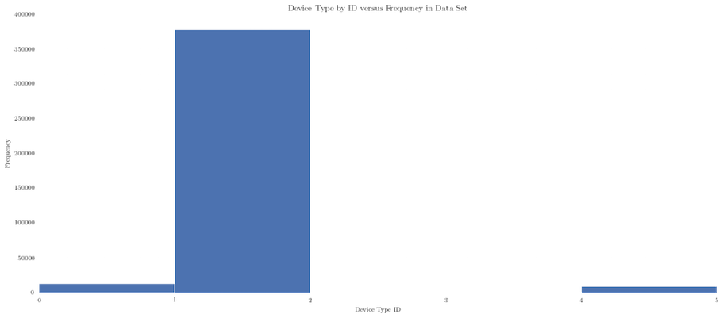

Predicting Advertisement Click-Through Rates
By using statistical & machine learning techniques to analyze a proprietary dataset.
Background & Motivation
Members of our group have extensive experience with technology startups and are interested in how these businesses successfully market products in today's industry. Our motivation is to identify specific variables that serve as predictors for an online advertisement's click-through rate. A click-through rate (CTR) is a measure of success of advertisement placement based on the ratio of clicks compared to the number of impressions or times the ad is show. We have acquired a proprietary dataset from a third-party advertising firm that specializes in cross-platform marketing and content monetization. Using this dataset, we plan to construct several models that identify important predictors of click-through rate. Our data analysis includes performing a logistic regression and generating a naive Bayesian classifier on a training subset of our data. We then verified our results on a test subset.
Our major inspiration stems from the recent paradigm shift in the advertising industry from PC-targeted banner advertisements to mobile-targeted banner advertisements and native advertising based on social media. Despite a recent shift towards mobile-based browsing, we wanted to explore the continuing relevance of PC-targeted banner advertising, as a significant market share continues to access the Internet using traditional methods.
Related Work
Our foray into the advertising industry was inspired by our prior experience with technology startups. Members of our group intend to work for similar companies upon graduation in business development roles, and have performed extensive research outside of class regarding various advertising techniques. Our major inspiration stems from the recent paradigm shift in the advertising industry from PC-targeted banner advertisements to mobile-targeted banner advertisements and native advertising based on social media. Despite a recent shift towards mobile-based browsing, we wanted to explore the continuing relevance of PC-targeted banner advertising, as a significant market share continues to access the Internet using traditional methods.
Previous literature has investigated the differences between business-to-business (B2B) and business-to-consumer (B2C) banner advertisements (Lohtia, Donthu, and Hershberger), while more recent research has addressed the effect of specific decision rules on click-through rate (Dembczyński, Kotłowski, and Weiss). Our investigation hopes to further existing literature and address specific critical knowledge gaps by determining which variables in our dataset contribute to click-through rate.
Data Exploration
Initial Questions
When we began our investigation, we proposed the following questions. These questions were born out of our initial preliminary analysis of the data and its features. We first looked at the data fields available in our dataset: an advertisement's click status, the hour of its clickthrough (in UTC), its banner position, the site it was placed on, the type of site it was placed on, the app it was viewed in, the type of app it was viewed in, the device it was viewed on, and the type it was viewed on. We also evaluated several other variables in the dataset that were deliberately obfuscated (named C## where # represents a random numeral) to preserve the security of this proprietary data.
- Our first question: what is the overall click-through rate across all observations?
- How much does banner position, information about the specific site/app, or another anonymous categorical variable shape the click-through rate? Will we overfit the model given the plethora of categorical information or size of the dataset?
As we began our analysis, we realized that our data primarily consisted of categorical variables. Thus, we determined that it would be most appropriate to evaluate it using a multinomial logistic regression and naive Bayesian classifier. Although we had initially proposed constructing a multiple Ordinary Least Squares linear regression alongside a k-Nearest-Neighbors classifier (and potentially a random forest classifier), we deemed that the data was inappropriate for such analyses and cut them from our list of exploratory methods.
We also considered additional questions in the course of our analysis—the major one being whether the presence of multiple high cardinality categorical features would cause our models to overfit the data. Given the size of our dataset—not a small set by any means but certainly not a large one spanning gigabytes—we wanted to further investigate this issue.
Methodology
After the initial cleanup of the data was complete, we analysed the categorical data to find out how the categories are distributed. We obtained the following graphs for each of the different variables.
Data Analysis
Multinomial Logistic Regression
Logistical regression was carried out on the data to see how accurate a logistical regression model would be.
We would like to note that scikit-learn's LogisticRegression doesn't actually compute a multinomial logistic regression. Instead, it performs an operation where it fits binary LR models on n classes and normalizes the probabilities. We will discuss this graph and our results in the below conclusion. We will initially comment that this graph and the results of the logistic regression demonstrate a relatively high prediction rate. There is a possibility that we overfit the data given the high cardinality of individual categorical variables, and the disparity in distribution between various levels in each categorical variable.
We look at the probability of the Logistic Regression, and note that the coefficients of the regression represent the rate of change in the "log odds" as each individual explanatory variable changes. This is extremely difficult to convert into a real-world meaningful result, especially since the magnitude of each individual coefficient is extremely low. Nonetheless, we identify that the coefficient for "C1" stood out as an interesting explanatory variable with a coefficient that was 8 orders of magnitude apart from other variables.
Naive Bayes Analysis
Naive Bayesian Analysis is a machine learning technique that is one of the simplest and most efficient ways to classify categorical data.
sklearn has built in functionality which we used to do our Naive Bayesian Analysis. The technique involves iterating through a training set to calculate the conditional probabilities of the target variable (in this case click) being a 0 or 1 given certain pieces of evidence.
For the test set, the algorithm involves going through all records and passing in the evidence, which in this case will be the data points of all columns except click. Based on the learning done during the training stage the model predicts whether each ad in the test data will be clicked or not based on the evidence that's passed in.
We look at the probability of the Naive Bayesian approach, and we note that the coefficients of the regression represent the empirical log possibility of features given a class, or the probability of some feature given the predictive value of an individual explanatory variable. As noted above, the individual magnitudes of these coefficients were extreely difficult to convert into a real-world meaningful number, especially since the magnitude of each individual coefficient was extremely low. However, we note again that the coefficient for "C1" stands out as an interesting explanatory variable on a completely different order of magnitude from other explanatory variables.
Conclusions
To begin our analysis and get a general idea of the data set that we were working with, we created a set of histograms documenting the distribution of the data based on the categories. All of the names of the values within the categories are all abstracted for confidentiality reasons, but the underlying data suggests the relative frequency of each variable within the categories. For example, though we do not know the exact values for each ID, we can see that the “Device Type” category has only 4 unique IDs, and we can assume they represent values such as iOS or Android. With the exploratory analysis of the following categories, note that they do represent real values but are just abstracted for the time being. In terms of frequency of values for each category, here are the main drivers:
- For Site Category, most of the points of the data were within IDs 1, 3, 4, and 5
- For App Category, most of the points of the data were within IDs 1 and 2
- For Banner Position, most of the points of the data were within IDs 1 and 2
- For Device type, most of the points of the data were within ID 2
- Device Connectivity type, most of the points of the data were within ID 1
- For Category 1, most of the points of the data were within ID 1
- For Category 15, most of the points of the data were within ID 1
- For Category 18, most of the points of the data were within IDs 1, 2, 3, and 4
- For Category 19, most of the points of the data were within IDs 1, 3, and 37
- For Category 21, most of the points of the data were within IDs 1, 2, 8, and 30
Now let us continue addressing other questions that we initially raised. It looks like our initial concern about high cardinality categorical variables was not unfounded.
We very quickly ran an informal test of our model on a data set in which each categorical variable's low-frequency levels were consolidated, and found the predictive power of that model to be much higher. As a result, we conclude that the extraordinarily large number of unique values within each categorical variable may have influenced our model's training, and recommend removing them in future iterations of this model. Since these features are not as generalizable, especially because many data points seem to be clustered in several high-impact levels within each category, we hope to further our model by constructing an additional dataset in which those features are removed.
Nonetheless, we conclude that the greatest predictor of click-through rate is "C1", the anonymized categorical variable. From our analysis of both Logistic Regression and the the Naive Bayesian classifier, we conclude that the coefficient of regression for "C1" was most significant within our confidence interval. It had the greatest impact, magnitude-wise, on our model, and leads us to believe that further investigation of this variable is necessary.
However, our next concern is also the total size of the dataset, as we do not want to overfit our model if our dataset still has a large number of categorical variables but not enough data points. In conclusion, we have determined that click-through rate can be influenced by a variety of factors, and ultimately conclude that more in-depth research can yield additional insight and heretofore unknown information about specific click-through rate conversion and yield.